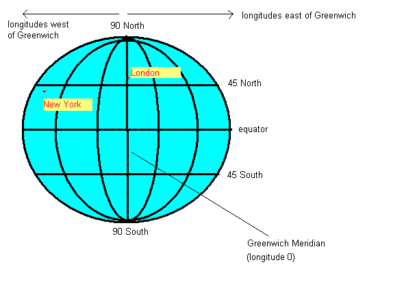

Geolocation
Latitude and Longitude
In order to understand location-based applications, it is important
to understand the coordinate system used on the earth. The most common
coordinate system uses latitude and longitude. Latitude is a measure
of how far north or south you are: the equator is at 0 degrees,
while the North Pole is at 90 degrees North, we are at about 50 and Spain
is at about 40. Longitude is a measure of how far east or west you are:
0 degrees of longitude is referred to as the Prime Meridian
(or Greenwich Meridian) and passes through Greenwich, London.
By contrast Germany is located
between approximately 7 degrees and 15 degrees East, while New York is at
74 degrees West and the west coast of North America at approximately 120
degrees West.

So a given point on the earth can be defined via its latitude and
longitude. We are at, approximately, 50.9 North (latitude) and 1.4 West
(longitude). By convention, latitudes north of the equator and longitudes
east of Greenwich are treated as positive, so we can also define our
position as longitude -1.4, latitude +50.9.
The Geolocation API
Introduction
The Geolocation API allows you to obtain the current location of the
device running the browser from within JavaScript. Even on desktop browsers
this will give a result if you are using a wireless network, but its real
use is in the mobile web development world. A mobile browser can talk to the
GPS chip of the phone and obtain the phone's current location on the earth.
Alternatively, if the GPS chip is not available, a rough estimate can be
obtained from cell towers or wireless networks.
Using the Geolocation API
It is fairly straightforward to use the Geolocation API. Here is an
example (please note - all examples in this topic will show the JavaScript only, not the HTML):
if(navigator.geolocation) {
navigator.geolocation.getCurrentPosition (
gpspos=> {
console.log(`Lat ${gpspos.coords.latitude} Lon ${gpspos.coords.longitude}`); // show on the console
},
err=> {
alert(`An error occurred: ${err.code}`);
}
);
} else {
alert("Sorry, geolocation not supported in this browser");
}
}
How is this working?
- The code
tests whether geolocation is possible in our browser by checking for the
existence of the navigator.geolocation variable. If it doesn't
exist, we display an error. If it does exist, we tell the
geolocation object to obtain the current position with
getCurrentPosition(). This takes two arguments, both functions:
- The first argument (an arrow function here)
is the function that will run as soon as we get a
location back from the GPS chip (or wireless network, etc)
- The second (here, another arrow function) will run if there
was an error obtaining the location.
-
Note the asynchronous approach here, just like AJAX. It might
take time to obtain a position, so we set up a callback
function to run once we have obtained the position, and continue
processing in the meantime. So any statements below the
getCurrentPosition() might run before
the callback processPosition() starts running.
- Considering each of these two functions in turn, let's look at
processPosition() first. This is automatically supplied with
one parameter, gpspos, which is an object
representing the position returned from the GPS device or other location provider. This object has a property coords representing the
coordinates, and coords itself has two properties,
latitude and longitude.
Therefore, we can obtain the latitude and
longitude with gpspos.coords.latitude and
gpspos.coords.longitude. So what this example is doing is
displaying the coordinates in the console (you can view the console
via More Tools-Developer Tools in Chrome or Web Developer-Web Console
in Firefox).
- Moving onto handleError() which is the function which
is run if there is any sort of error in obtaining the position: again,
this is automatically supplied with one parameter, err,
an object representing the exact error which occurred. The most meaningful
property of err is a numerical code, err.code, which
is what we are displaying here. There are several codes
(ref Dive into
HTML5, Mark Pilgrim):
- 1 means that the user denied the browser access to the device's
location. For security reasons, a user has to agree to the browser
accessing the device's GPS chip, and if they deny that access, the
error function will run with a code of 1.
- 2 means that the location could not be obtained, e.g the
GPS satellites or wireless networks are unavailable;
- 3 means a timeout, i.e. the GPS satellites or network are
available but it has taken too long to contact them.
Watching the position
The above code will simply obtain the current position and stop. In a
typical mobile GPS application, however, the user will want to be informed
of their location on a regular basis. To do this we use
watchPosition() in place of getCurrentPosition(). Here is
an example:
if(navigator.geolocation) {
navigator.geolocation.watchPosition (
gpspos=> {
console.log(`Lat ${gpspos.coords.latitude} Lon ${gpspos.coords.longitude}`); // show on the console
},
err=> {
alert(`An error occurred: ${err.code}`);
},
{
enableHighAccuracy:true,
maximumAge: 5000
}
);
} else {
alert("Sorry, geolocation not supported in this browser");
}
Note that the code is almost the same as the first example, except:
- We use watchPosition() rather than
getCurrentPosition(). The result will be that the GPS chip
(or other location provider) will communicate the current location back
to the process position arrow
function every time the location changes, rather
than just the once.
- Note also the additional options passed as a third parameter to
watchPosition(). On many mobile devices, if we want to use the
GPS chip (rather than cell towers, wireless networks, etc) we have
to set the enableHighAccuracy option to true. Also
if we want to force the GPS to return a reading every so-many seconds,
we have to specify a value for the maximumAge option, in
milliseconds. So the above example will refresh at least every 5
seconds.
IMPORTANT - Geolocation API now needs HTTPS server
For security reasons (the risk of your location being intercepted by
packet-sniffers) the Geolocation API now
requires the use of an HTTPS server (a web server with
encrypted communication), on both Chrome and Firefox.
If you are running on localhost (your own local machine),
however, HTTPS is not needed.
See Let's Encrypt for information on
setting up an HTTPS server.
Exercise
- Write a simple application that displays your current latitude and
longitude inside a <div>. Note that if you are on a wifi network this
might be inaccurate; for example at home I am located at Stoke-on-Trent,
a long way from where I live!
- At this URL:
https://hikar.org/fm/ws/bsvr.php?bbox=WEST,SOUTH,EAST,NORTH&poi=all&format=json
is a JSON web service which returns nearby points of interest.
(WEST, SOUTH, EAST and NORTH represent the edges of a box to search in).
Write an application which creates a box where;
- WEST=your current longitude-0.05
- SOUTH=your current latitude-0.05
- EAST=your current longitude+0.05
- NORTH=your current latitude+0.05
and sends an AJAX request to the above URL. Parse the JSON returned and show
the contents of the properties of each feature in the
JSON within a <div>.